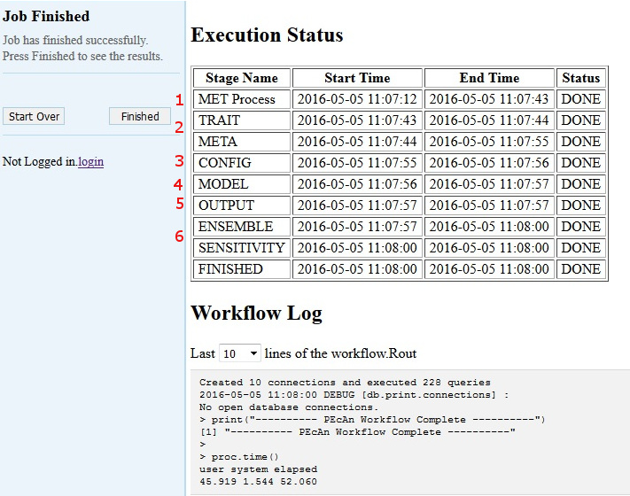

5 User Tutorial Section
The user Section contains the following sections: Basic Web Workflow Usage PEcAn Web Interface PEcAn from the Command Line
5.1 How PEcAn Works in a nutshell
PEcAn provides an interface to a variety of ecosystem models and attempts to standardize and automate the processes of model parameterization, execution, and analysis. First, you choose an ecosystem model, then the time and location of interest (a site), the plant community (or crop) that you are interested in simulating, and a source of atmospheric data from the BETY database (LeBauer et al, 2010). These are set in a “settings” file, commonly named pecan.xml which can be edited manually if desired. From here, PEcAn will take over and set up and execute the selected model using your settings. The key is that PEcAn uses models as-is, and all of the translation steps are done within PEcAn so no modifications are required of the model itself. Once the model is finished it will allow you to create graphs with the results of the simulation as well as download the results. It is also possible to see all past experiments and simulations.
There are two ways of using PEcAn, via the web interface and directly within R. Even for users familiar with R, using the web interface is a good place to start because it provides a high level overview of the PEcAn workflow. The quickest way to get started is to download the virtual machine or use an AWS instance.
5.2 PEcAn Demos
The following Tutorials assume you have installed PEcAn. If you have not, please consult the PEcAn Installation Section.
| Type | Title | Web Link | Source Rmd |
|---|---|---|---|
| Demo | Basic Run | html | Rmd |
| Demo | Uncertainty Analysis | html | Rmd |
| Demo | Output Analysis | html | Rmd |
| Demo | MCMC | html | Rmd |
| Demo | Parameter Assimilation | html | Rmd |
| Demo | State Assimilation | html | Rmd |
| Demo | Sensitivity | html | Rmd |
| Vignette | Allometries | html | Rmd |
| Vignette | MCMC | html | Rmd |
| Vignette | Meteorological Data | html | Rmd |
| Vignette | Meta-Analysis | html | Rmd |
| Vignette | Photosynthetic Response Curves | html | Rmd |
| Vignette | Priors | html | Rmd |
| Vignette | Leaf Spectra:PROSPECT inversion | html | Rmd |
5.3 PEcAn Hands-On Demo 01: Basic Run
5.3.1 Objective
We will begin by exploring a set of web-based tools that are designed to run single-site model runs. A lot of the detail about what’s going on under the hood, and all the outputs that PEcAn produces, are left to Demo 2. This demo will also demonstrate how to use PEcAn outputs in additional analyses outside of PEcAn.
5.3.2 PEcAn URL
In the following demo, URL is the web address of a PEcAn server and will refer to one of the following:
- If you are doing a live demo with the PEcAn team, URL was provided
- If you are running the PEcAn virtual machine: URL = localhost:6480
- If you are running PEcAn using Amazon Web Services (AWS), URL is the Public IP
- If you are running PEcAn using Docker, URL is localhost:8000/pecan/ (trailing backslash is important!)
- If you followed instructions found in [Install PEcAn by hand], URL is your server’s IP
5.3.3 Start PEcAn:
- Enter URL in your web browser
- Click “Run Models”
- Click the ‘Next’ button to move to the “Site Selection” page.

5.3.4 Site Selection
5.3.5 Host
Select the local machine “pecan”. Other options exist if you’ve read and followed instructions found in Remote execution with PEcAn.
5.3.6 Mode
Select SIPNET (r136) from the available models because it is quick & simple. Reference material can be found in [Models in PEcAn]
5.3.7 Site Group
To filter sites, you can select a specific group of sites. For this tutorial we will use Ameriflux.
5.3.8 Conversion:
Select the conversion check box, to show all sites that PEcAn is capable of generating model drivers for automatically. By default (unchecked), PEcAn only displays sites where model drivers already exist in the system database
5.3.9 Site:
For this tutorial, type US-NR1 in the search box to display the Niwot Ridge Ameriflux site (US-NR1), and then click on the pin icon. When you click on a site’s flag on the map, it will give you the name and location of the site and put that site in the “Site:” box on the left hand site, indicating your current selection.
Once you are finished with the above steps, click “Next”.
5.3.9.1 Run Specification
Next we will specify settings required to run the model. Be aware that the inputs required for any particular model may vary somewhat so there may be addition optional or required input selections available for other models.
5.3.9.2 PFT (Plant Functional Type):
Niwot Ridge is temperate coniferous. Available PFTs will vary by model and some models allow multiple competing PFTs to be selected. Also select soil to control the soil parameters
5.3.9.3 Start/End Date:
Select 2003/01/01 to 2006/12/31. In general, be careful to select dates for which there is available driver data.
5.3.9.4 Weather Data:
Select “Use AmerifluxLBL” from the Available Meteorological Drivers.
5.3.9.5 Optional Settings:
Leave all blank for demo run
- Email sends a message when the run is complete.
- Use Brown Dog will use the Brown Dog web services in order to do input file conversions. (Note: Required if you select Use NARR for Weather Data)
- Edit pecan.xml allows you to configure advanced settings via the PEcAn settings file
- Edit model config pauses the workflow after PEcAn has written all model specific settings but before the model runs are called and allows users to configure any additional settings internal to the model.
- Advanced Setup controls ensemble and sensitivity run settings discussed in Demo 2.
Finally, click “Next” to start the model run.
5.3.9.6 Data Use Policies
You will see a data policy statement if you selected a data source with a policy. Agreeing to the policy is required prior to starting the run.
5.3.9.7 If you get an error in your run
If you get an error in your run as part of a live demo or class activity, it is probably simplest to start over and try changing options and re-running (e.g. with a different site or PFT), as time does not permit detailed debugging. If the source of the error is not immediately obvious, you may want to take a look at the workflow.Rout to see the log of the PEcAn workflow or the logfile.txt to see the model execution output log and then refer to the Documentation or the Chat Room for help.
5.3.10 Model Run Workflow

5.3.10.1 MET Process:
First, PEcAn will download meteorological data based on the type of the Weather Data you chose, and process it into the specific format for the chosen model
5.3.10.2 TRAIT / META:
PEcAn then estimates model parameters by performing a meta-analysis of the available trait data for a PFT. TRAIT will extract relevant trait data from the database. META performs a hierarchical Bayes meta-analysis of available trait data. The output of this analysis is a probability distribution for each model parameter. PEcAn selects the median value of this parameter as the default, but in Demo 2 we will see how PEcAn can use this parameter uncertainty to make probabilistic forecasts and assess model sensitivity and uncertainty. Errors at this stage usually indicate errors in the trait database or incorrectly specified PFTs (e.g. defining a variable twice).
5.3.10.3 CONFIG:
writes model-specific settings and parameter files
5.3.10.4 MODEL:
runs model.
5.3.10.5 OUTPUT:
All model outputs are converted to standard netCDF format
5.3.10.6 ENSEMBLE & SENSITIVITY:
If enabled post-process output for these analyses
If at any point a Stage Name has the Status “ERROR” please notify the PEcAn team member that is administering the demo or feel free to do any of the following:
- Refer to the PEcAn Documentation for documentation
- Post the end of your workflow log on our Gitter chat
- Post an issue on Github.
The entire PEcAn team welcomes any questions you may have!
If the Finished Stage has a Status of “DONE”, congratulations! If you got this far, you have managed to run an ecosystem model without ever touching a line of code! Now it’s time to look at the results click Finished.
FYI, adding a new model to PEcAn does not require modification of the model’s code, just the implementation of a wrapper function.
5.3.10.7 Output and Visualization
For now focus on graphs, we will explore all of PEcAn’s outputs in more detail in Demo 02.
5.3.10.8 Graphs
- Select a Year and Y-axis Variable, and then click ‘Plot run/year/variable’. Initially leave the X-axis as time.
- Within this figure the points indicate the daily mean for the variable while the envelope encompasses the diurnal variability (max and min).
- Variable names and units are based on a standard netCDF format.
- Try looking at a number of different output variables over different years.
- Try changing the X-axis to look at bivariate plots of how different output variables are related to one another. Be aware that PEcAn currently runs a moving min/mean/max through bivariate plots, just as it does with time series plots. In some cases this makes more sense than others.
5.3.10.9 Alternative Visualization: R Shiny
- Click on Open SHINY, which will open a new browser window. The shiny app will automatically access your run’s output files and allow you to visualize all output variables as a function of time.

- Use the pull down menu under Variable Name to choose whichever output variable you wish to plot.
5.3.10.10 Model Run Archive
Return to the output window and Click on the HISTORY button. Click on any previous run in the “ID” column to go to the current state of that run’s execution – you can always return to old runs and runs in-progress this way. The run you just did should be the more recent entry in the table. For the next analysis, make note of the ID number from your run.
5.3.11 Next steps
5.3.11.0.1 Analyzing model output
Follow this tutorial, [Analyze Output] to learn how to open model output in R and compare to observed data
5.3.11.1 DEMO 02
Demo 02: Sensitivity and Uncertainty Analysis will show how to perform Ensemble & Sensitivity Analyses through the web interface and explore the PEcAn outputs in greater detail, including the trait meta-analysis
5.4 Demo 02: Sensitivity and Uncertainty Analysis
In Demo 2 we will be looking at how PEcAn can use information about parameter uncertainty to perform three automated analyses:
- Ensemble Analysis: Repeat numerous model runs, each sampling from the parameter uncertainty, to generate a probability distribution of model projections. Allows us to put a confidence interval on the model
- Sensitivity Analysis: Repeats numerous model runs to assess how changes in model parameters will affect model outputs. Allows us to identify which parameters the model is most sensitive to.
- Uncertainty Analysis: Combines information about model sensitivity with information about parameter uncertainty to determine the contribution of each model parameter to the uncertainty in model outputs. Allow us to identify which parameters are driving model uncertainty.
5.4.1 Run Specification
Return to the main menu for the PEcAn web interface: URL > Run Models
Repeat the steps for site selection and run specification from Demo 01, but also click on “Advanced setup”, then click Next.
By clicking Advanced setup, PEcAn will first show an Analysis Menu, where we are going to specify new settings.
For an ensemble analysis, increase the number of runs in the ensemble, in this case set Runs to 50. In practice you would want to use a larger ensemble size (100-5000) than we are using in the demo. The ensemble analysis samples parameters from their posterior distributions to propagate this uncertainty into the model output.
PEcAn’s sensitivity analysis holds all parameters at their median value and then varies each parameter one-at-a-time based on the quantiles of the posterior distribution. PEcAn also includes a handy shortcut, which is the default behavior for the web interface, that converts a specified standard deviation into its Normal quantile equivalent (e.g. 1 and -1 are converted to 0.157 and 0.841). In this example set Sensitivity to -2,-1,1,2 (the median value, 0, occurs by default).
We also can tell PEcAn which variable to run the sensitivity on. Here, set Variables to NEE, so we can compare against flux tower NEE observations.
Click Next
5.4.2 Additional Outputs:
The PEcAn workflow will take considerably longer to complete since we have just asked for over a hundred model runs. Once the runs are complete you will return to the output visualization page were there will be a few new outputs to explore, as well as outputs that were present earlier that we’ll explore in greater details:
5.4.3 1. Run ID:
While the sensitivity and ensemble analyses synthesize across runs, you can also select individual runs from the Run ID menu. You can use the Graphs menu to visualize each individual run, or open individual runs in Shiny
5.4.4 2. Inputs:
This menu shows the contents of /run which lets you look at and download:
- A summary file (README.txt) describing each run: location, run ID, model, dates, whether it was in the sensitivity or ensemble analysis, variables modifed, etc.
- The model-specific input files fed into the model
- The jobs.sh file used to submit the model run
5.4.5 3. Outputs:
This menu shows the contents of /out. A number of files generated by the underlying ecosystem model are archived and available for download. These include:
- Output files in the standardized netCDF ([year].nc) that can be downloaded for visualization and analysis (R, Matlab, ncview, panoply, etc)
- Raw model output in model-specific format (e.g. sipnet.out).
- Logfile.txt contains job.sh & model error, warning, and informational messages
5.4.6 4. PFTs:
This menu shows the contents of /pft. There is a wide array of outputs available that are related to the process of estimating the model parameters and running sensitivity/uncertainty analyses for a specific Plant Functional Type.
- TRAITS: The Rdata files trait.data.Rdata and madata.Rdata are, respectively, the available trait data extracted from the database that was used to estimate the model parameters and that same data cleaned and formatted for the statistical code. The list of variables that are queried is determined by what variables have priors associated with them in the definition of the PFTs. Priors are output into prior.distns.Rdata. Likewise, the list of species that are associated with a PFT determines what subset of data is extracted out of all data matching a given variable name. Demo 3 will demonstrate how a PFT can be created or modified. To look at these files in RStudio click on these files to load them into your workspace. You can further examine them in the Environment window or accessing them at the command line. For example, try typing
names(trait.data)as this will tell you what variables were extracted,names(trait.data$Amax)will tell you the names of the columns in the Amax table, andsummary(trait.data$Amax)will give you summary data about the Amax values. - META-ANALYSIS:
*.bug: The evaluation of the meta-analysis is done using a Bayesian statistical software package called JAGS that is called by the R code. For each trait, the R code will generate a [trait].model.bug file that is the JAGS code for the meta-analysis itself. This code is generated on the fly, with PEcAn adding or subtracting the site, treatment, and greenhouse terms depending upon the presence of these effects in the data itself. If the <random.effects> tag is set to FALSE then all random effects will be turned off even if there are multiple sites.meta-analysis.logcontains a number of diagnostics, including the summary statistics of the model, an assessment of whether the posterior is consistent with the prior, and the status of the Gelman-Brooks-Rubin convergence statistic (which is ideally 1.0 but should be less than 1.1).ma.summaryplots.*.pdfare collections of diagnostic plots produced in R after the above JAGS code is run that are useful in assessing the statistical model. Open up one of these pdfs to evaluate the shape of the posterior distributions (they should generally be unimodal), the convergence of the MCMC chains (all chains should be mixing well from the same distribution), and the autocorrelation of the samples (should be low).traits.mcmc.Rdatacontains the raw output from the statistical code. This includes samples from all of the parameters in the meta-analysis model, not just those that feed forward to the ecosystem, but also the variances, fixed effects, and random effects.post.distns.Rdatastores a simple tables of the posterior distributions for all model parameters in terms of the name of the distribution and its parameters.posteriors.pdfprovides graphics showing, for each model parameter, the prior distribution, the data, the smoothed histogram of the posterior distribution (labeled post), and the best-fit analytical approximation to that smoothed histogram (labeled approx). Open posteriors.pdf and compare the posteriors to the priors and data
- SENSITIVITY ANALYSIS
sensitivity.analysis.[RunID].[Variable].[StartYear].[EndYear].pdfshows the raw data points from univariate one-at-a-time analyses and spline fits through the points. Open this file to determine which parameters are most and least sensitive
- UNCERTAINTY ANALYSIS
variance.decomposition.[RunID].[Variable].[StartYear].[EndYear].pdf, contains three columns, the coefficient of variation (normalized posterior variance), the elasticity (normalized sensitivity), and the partial standard deviation of each model parameter. Open this file for BOTH the soil and conifer PFTS and answer the following questions:- The Variance Decomposition graph is sorted by the variable explaining the largest amount of variability in the model output (right hand column). From this graph identify the top-tier parameters that you would target for future constraint.
- A parameter can be important because it is highly sensitive, because it is highly uncertain, or both. Identify parameters in your output that meet each of these criteria. Additionally, identify parameters that are highly uncertain but unimportant (due to low sensitivity) and those that are highly sensitive but unimportant (due to low uncertainty).
- Parameter constraints could come from further literature synthesis, from direct measurement of the trait, or from data assimilation. Choose the parameter that you think provides the most efficient means of reducing model uncertainty and propose how you might best reduce uncertainty in this process. In making this choice remember that not all processes in models can be directly observed, and that the cost-per-sample for different measurements can vary tremendously (and thus the parameter you measure next is not always the one contributing the most to model variability). Also consider the role of parameter uncertainty versus model sensitivity in justifying your choice of what parameters to constrain.
5.4.7 PEcAn Files:
This menu shows the contents of the root workflow folder that are not in one of the folders indicated above. It mostly contains log files from the PEcAn workflow that are useful if the workflow generates an error, and as metadata & provenance (a detailed record of how data was generated).
STATUSgives a summary of the steps of the workflow, the time they took, and whether they were successfulpecan.*.xmlare PEcAn settings filesworkflow.Ris the workflow scriptworkflow.Routis the corresponding log filesamples.Rdatacontains the parameter values used in the runs. This file contains two data objects, sa.samples and ensemble.samples, that are the parameter values for the sensitivity analysis and ensemble runs respectivelysensitivity.output.[RunID].[Variable].[StartYear].[EndYear].Rdatacontains the object sensitivity.output which is the model outputs corresponding to the parameter values in sa.samples.- ENSEMBLE ANALYSIS
ensemble.Rdatacontains contains the object ensemble.output, which is the model predictions at the parameter values given in ensemble.samples.ensemble.analysis.[RunID].[Variable].[StarYear].[EndYear].pdfcontains the ensemble prediction as both a histogram and a boxplot.ensemble.ts.[RunID].[Variable].[StartYear].[EndYear].pdfcontains a time-series plot of the ensemble mean, median, and 95% CI
5.4.8 Global Sensitivity: Shiny
Navigate to URL/shiny/global-sensitivity.
This app uses the output from the ENSEMBLE runs to perform a global Monte Carlo sensitivity analysis. There are three modes controlled by Output type:
- Pairwise looks at the relationship between a specific parameter (X) and output (Y)
- All parameters looks at how all parameters affect a specific output (Y)
- All variables looks at how all outputs are affected by a specific parameter(X)
In all of these analyses, the app also fits a linear regression to these scatterplots and reports a number of summary statistics. Among these, the slope is an indicator of global sensitivity and the R2 is an indicator of the contribution to global uncertainty
5.4.9 Next Steps
The next set of tutorials will focus on the process of data assimilation and parameter estimation. The next two steps are in “.Rmd” files which can be viewed online.
5.4.10 Assimilation ‘by hand’
Explore how model error changes as a function of parameter value (i.e. data assimilation ‘by hand’)
5.4.11 MCMC Concepts
Explore Bayesian MCMC concepts using the photosynthesis module
5.4.12 More info about tools, analyses, and specific tasks…
Additional information about specific tasks (adding sites, models, data; software updates; etc.) and analyses (e.g. data assimilation) can be found in the PEcAn documentation
If you encounter a problem with PEcAn that’s not covered in the documentation, or if PEcAn is missing functionality you need, please search known bugs and issues, submit a bug report, or ask a question in our chat room. Additional questions can be directed to the project manager
5.5 Other Vignettes
5.6 Advanced User Guide
5.6.1 Submitting Workflow from Command Line
This is how you can submit a workflow from the command line through the pecan web interface. This will use curl to submit all the requireed parameters to the web interface and trigger a run.
# the host where the model should run
# never use remote sites since you will need to pass your username/password and that WILL be stored
hostname=pecan.vm
# the site id where to run the model (NIWOT in this case)
siteid=772
# start date and end date, / need to be replaced with %2F or use - (NOT TESTED)
start=2004-01-01
end=2004-12-31
# if of model you want to run, rest of section parameters depend on the model selected (SIPNET 136)
modelid=5000000002
# PFT selected (we should just use a number here)
# NOTE: the square brackets are needed and will need be escaped with a \ if you call this from command line
pft[]=temperate.coniferous
# initial pool condition (-1 means nothing is selected)
input_poolinitcond=-1
# met data
input_met=99000000006
# variables to collect
variables=NPP,GPP
# ensemble size
runs=10
# use sensitivity analysis
sensitivity=-1,1
# redirect to the edit pecan.xml file
pecan_edit=on
# redirect to edit the model configuration files
model_edit=on
# use browndog
browndog=onFor example the following will run the above workflow. Using -v in curl will show verbose output (needed) and the grep will make sure it only shows the redirect. This will show the actual workflowid:
curl -s -v 'http://localhost:6480/pecan/04-runpecan.php?hostname=pecan.vm&siteid=772&start=2004-01-01&end=2004-12-31&modelid=5000000002&pft\[\]=temperate.coniferous&input_poolinitcond=-1&input_met=99000000006' 2>&1 | grep 'Location:'
< Location: 05-running.php?workflowid=99000000004In this case you can use the browser to see progress, or use the following to see the status:
curl -s 'http://localhost:6480/pecan/dataset.php?workflowid=99000000004&type=file&name=STATUS'
TRAIT 2017-12-13 08:56:56 2017-12-13 08:56:57 DONE
META 2017-12-13 08:56:57 2017-12-13 08:57:13 DONE
CONFIG 2017-12-13 08:57:13 2017-12-13 08:57:14 DONE
MODEL 2017-12-13 08:57:14 2017-12-13 08:57:15 DONE
OUTPUT 2017-12-13 08:57:15 2017-12-13 08:57:15 DONE
ENSEMBLE 2017-12-13 08:57:15 2017-12-13 08:57:16 DONE
FINISHED 2017-12-13 08:57:16 2017-12-13 08:57:16 DONEOr to show the output log:
curl -s 'http://localhost:6480/pecan/dataset.php?workflowid=99000000004&type=file&name=workflow.Rout'
R version 3.4.3 (2017-11-30) -- "Kite-Eating Tree"
Copyright (C) 2017 The R Foundation for Statistical Computing
Platform: x86_64-pc-linux-gnu (64-bit)
R is free software and comes with ABSOLUTELY NO WARRANTY.
You are welcome to redistribute it under certain conditions.
Type 'license()' or 'licence()' for distribution details.
R is a collaborative project with many contributors.
....